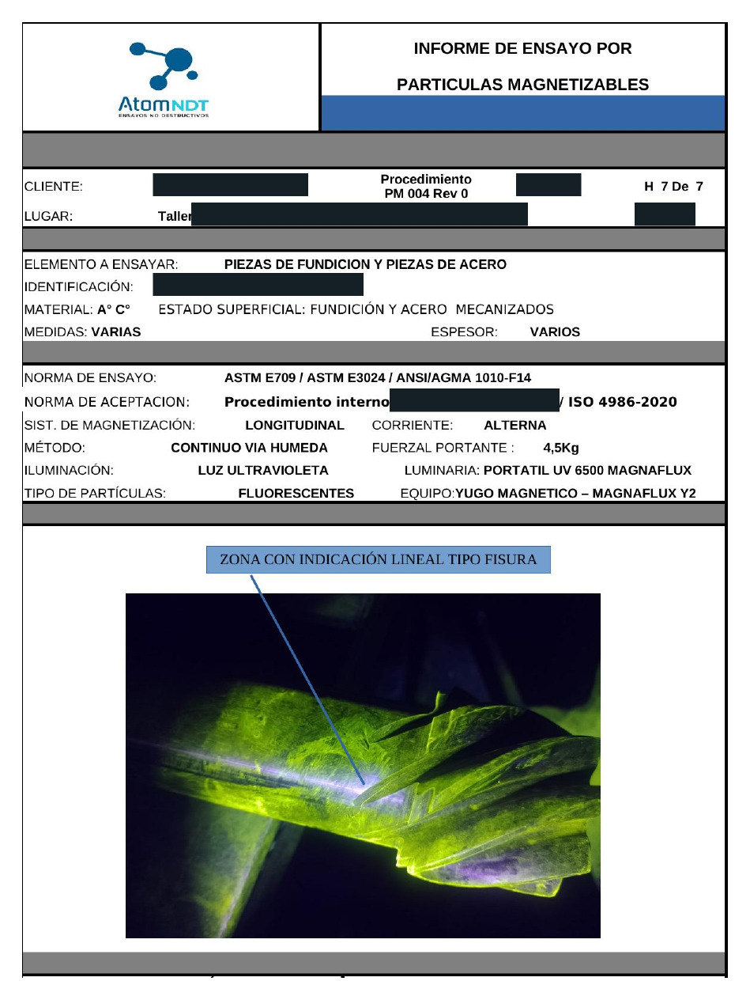

Control durante fabricación
Inspección de soldaduras, piezas y componentes antes de su entrega o incorporación a un conjunto.
Ensayos No Destructivos Lanús, Buenos Aires
Servicios de Ensayos No Destructivos para metalúrgicas, fabricantes y empresas de mantenimiento industrial, con atención directa por técnico Nivel 2 y más de 25 años de experiencia.
Podés enviarnos fotos, medidas, material, ubicación y requisitos del trabajo.
Fotografía de inspección
Cada trabajo requiere evaluar el material, la geometría, el acceso, el tipo de discontinuidad buscada y el criterio de aceptación aplicable.
En Atom NDT analizamos la necesidad antes de definir el método de inspección más adecuado.
Inspección de soldaduras, piezas y componentes antes de su entrega o incorporación a un conjunto.
Evaluación de zonas reparadas para detectar indicaciones y documentar el resultado del trabajo realizado.
Control de componentes sometidos a uso, desgaste o esfuerzos durante tareas de mantenimiento programado.
Informes técnicos, registros fotográficos y evaluación conforme a normas, especificaciones o criterios aplicables.
Seleccionamos y aplicamos el método de inspección de acuerdo con el material, la geometría de la pieza, el acceso disponible y el objetivo del control.
Servicio prioritario
Detección de discontinuidades superficiales y cercanas a la superficie en materiales ferromagnéticos.
Aplicaciones: Soldaduras · piezas fundidas · piezas forjadas · cañerías · reparaciones · rieles
Conocer el servicioInspección volumétrica para localizar, evaluar y registrar discontinuidades internas en soldaduras y componentes.
Aplicaciones: Soldaduras · chapas · tubos · cañerías · componentes industriales · rieles
Conocer el servicioDetección de discontinuidades abiertas a la superficie en materiales sólidos y no porosos.
Aplicaciones: Soldaduras · piezas mecanizadas · fundidos · materiales no ferromagnéticos · reparaciones
Conocer el servicioEvaluación interna de soldaduras y componentes mediante técnicas radiográficas, según las condiciones y requisitos de cada proyecto.
Servicio sujeto a evaluación técnica, operativa y de seguridad radiológica.
Consultar disponibilidadLa experiencia profesional de Cristian incluye inspecciones sobre componentes de fabricación, mantenimiento y servicio en distintos entornos industriales.
Aplicaciones industriales
La posibilidad de inspección y el método aplicable se determinan luego de evaluar el material, la geometría, el acceso y el objetivo del ensayo.
A lo largo de su trayectoria, Cristian desarrolló tareas de Ensayos No Destructivos, inspección y supervisión en gasoductos, plantas compresoras, refinerías, proyectos energéticos, instalaciones nucleares y sistemas ferroviarios.
Experiencia en inspección y Ensayos No Destructivos aplicados a gasoductos, plantas compresoras, cañerías y entornos de refinería.
Participación profesional en tareas de inspección y Ensayos No Destructivos vinculadas a proyectos de generación, instalaciones termoeléctricas y el proyecto Atucha II.
Inspección y Ensayos No Destructivos aplicados a soldaduras, chapas, componentes fundidos, piezas forjadas y reparaciones ejecutadas por terceros.
Experiencia en inspección ultrasónica de rieles y soldaduras ferroviarias mediante sistemas especializados.
El profesional detrás de Atom NDT
Retrato profesional
Atom NDT es atendida por Cristian Czornobaj, Técnico Electrónico con más de 25 años de experiencia en Ensayos No Destructivos, inspección y supervisión industrial.
Cristian participa personalmente en la evaluación inicial, la preparación del trabajo, la ejecución del ensayo, la interpretación de los resultados y la emisión de la documentación correspondiente.
Esta modalidad permite mantener una comunicación directa con el técnico que analiza y ejecuta el trabajo, sin intermediarios comerciales entre la consulta y la inspección.
Recursos técnicos
Atom NDT dispone de equipamiento propio para inspecciones por Partículas Magnéticas y Ultrasonido Industrial, además de instrumentos auxiliares y consumibles seleccionados según las características de cada trabajo.
Equipo de Partículas Magnéticas
Yugo, iluminación, instrumentos auxiliares y partículas Magnaflux para inspecciones sobre materiales ferromagnéticos.
Equipo de Ultrasonido
Equipo GE USM Go y accesorios de inspección y calibración seleccionados según la técnica y los requisitos del trabajo.
Recursos según el proyecto
Consumibles para Líquidos Penetrantes y coordinación de equipamiento específico para Radiografía Industrial y Phased Array según el alcance del proyecto.
Los equipos, instrumentos, accesorios y consumibles se seleccionan y verifican de acuerdo con el procedimiento y los requisitos aplicables al ensayo.
Trazabilidad del trabajo
El alcance documental se define según los requisitos del cliente, el método aplicado y las características del proyecto.

Descripción del alcance, método aplicado, equipos utilizados, técnica de inspección y resultados obtenidos.
Imágenes del proceso, de las áreas inspeccionadas y de las indicaciones relevantes cuando corresponda.
Identificación de la pieza, zona inspeccionada y ubicación de los hallazgos registrados durante el ensayo.
Declaración de conformidad o rechazo conforme a la norma, especificación o criterio de aceptación aplicable.
Emisión de la documentación correspondiente al alcance acordado con el cliente.
La evaluación se limita al alcance del ensayo realizado y al criterio aplicable. No constituye por sí sola una evaluación integral de aptitud para servicio de la pieza o instalación.
Abrir informe de Partículas MagnéticasProceso de trabajo
Cada solicitud se evalúa de manera personalizada para definir el método, el alcance, la documentación y las condiciones de ejecución.
Compartí fotos, tipo de pieza, material, cantidad, dimensiones, ubicación y norma o especificación, si está disponible.
Analizamos el método, acceso, preparación, equipos, consumibles, criterio de aceptación y condiciones del lugar.
Definimos alcance, disponibilidad, movilización, documentación requerida y valor del servicio.
El ensayo se ejecuta en las instalaciones del cliente o sobre piezas trasladadas a un lugar previamente coordinado.
Emitimos el informe, los registros y la evaluación acordada para el trabajo.
Área de servicio
Atom NDT tiene base operativa en Lanús y brinda cobertura habitual en un radio aproximado de hasta 200 km.
Atendemos trabajos en el AMBA, CABA, La Plata y otras localidades de la Provincia de Buenos Aires. Los proyectos fuera del área habitual se evalúan según su alcance, duración y condiciones de movilización.
Las inspecciones pueden realizarse en planta, taller, obra o sobre piezas trasladadas a un lugar previamente coordinado.
La disponibilidad, los requisitos de ingreso y la documentación necesaria se coordinan de acuerdo con las condiciones de cada establecimiento y proyecto.
Hasta 200 km
Formación y respaldo técnico
Cristian cuenta con formación y certificaciones en distintos métodos de Ensayos No Destructivos, aplicadas a inspecciones durante fabricación y sobre componentes en servicio.
Nivel 2
Nivel 2
Nivel 2
Nivel 2
Phased ArrayNivel 1
Permiso individual de gammagrafíapara uso de radioisótopos
Información antes de consultar
No necesariamente. Podés enviarnos la información del componente y el objetivo de la inspección para realizar una evaluación inicial.
Fotos, material, tipo de componente, cantidad, dimensiones, ubicación, fecha requerida y norma o especificación, cuando corresponda.
Sí. Se evalúan tanto inspecciones puntuales como trabajos de mayor alcance.
Sí. También puede coordinarse la inspección sobre piezas trasladadas a un lugar previamente acordado.
Sí. El alcance puede incluir informe, registro fotográfico, ubicación de indicaciones y evaluación conforme al criterio aplicable.
Sí. La cobertura habitual es de hasta 200 km desde Lanús y otros destinos se evalúan según las características del proyecto.
Evaluación inicial
Enviá los datos del trabajo y coordinamos una evaluación técnica para definir el método, el alcance y la documentación necesaria.
Fotos · material · tipo de componente · cantidad · dimensiones · ubicación · norma o especificación
La consulta inicial permite evaluar la viabilidad del trabajo y preparar una cotización personalizada.
Atención con coordinación previa. No se ofrecen servicios de emergencia ni atención nocturna.